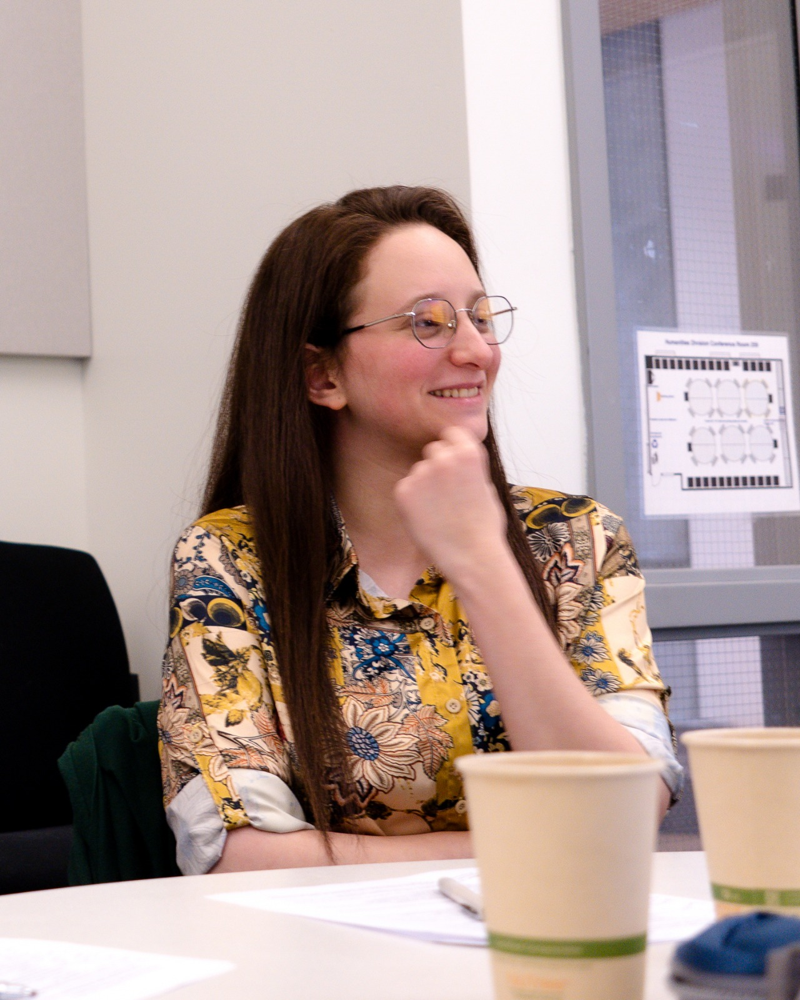

University of California, Santa Cruz
Syntax · Semantics · Palestinian Arabic

I am a second-year PhD student in Linguistics at UC Santa Cruz, working under the supervision of Roumyana Pancheva. My research interests lie in syntax and its interfaces with lexical and formal semantics, as well as micro and macro comparative syntax.
Topics I work on — past and present — include tense, aspect, and modality (TAM), clausal architecture, mirativity, and superlatives. My research draws on data from the dialects of Palestinian Arabic.
Prior to joining UC Santa Cruz, I received an MA in Linguistics from the Hebrew University of Jerusalem, where I was supervised by Nora Boneh.
Palestinian Arabic (dialects)
Linguistics Department
UC Santa Cruz
My past and ongoing projects examine how tense, aspect, modality, perspective, and evidentiality are grammatically encoded across dialects of Palestinian Arabic, with a particular focus on future-oriented and near-future meanings. I also investigate superlative and comparative constructions and the role of definiteness in Palestinian Arabic.
Future-oriented and near-future meanings in Palestinian Arabic dialects.
Mono- and bi-clausal structures; multi-verb and serial predicate constructions.
Evidential and mirative grammatical categories and their syntactic encoding.
Superlative and comparative constructions; the role of definiteness.
Micro- and macro-comparative approaches to Arabic dialect variation.
How information source and viewpoint are grammatically expressed.
Full academic record — education, publications, talks, and teaching.
Download PDF